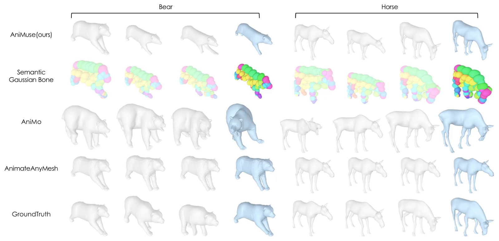
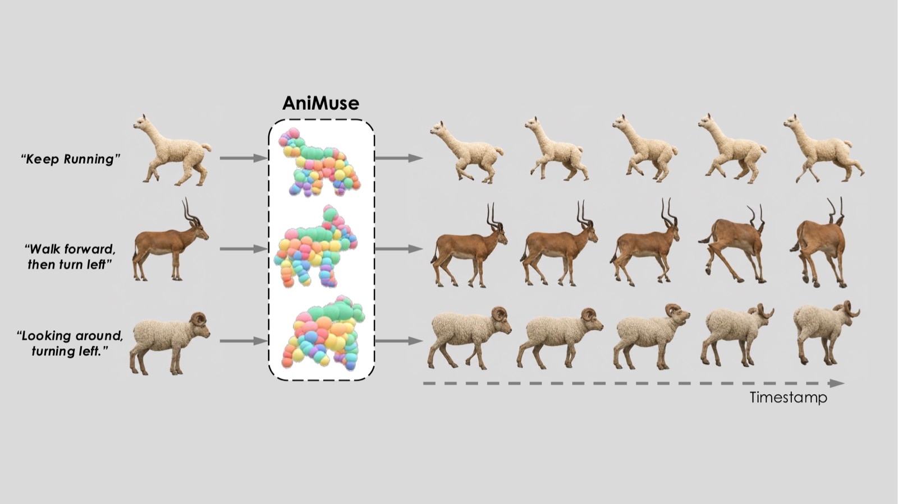
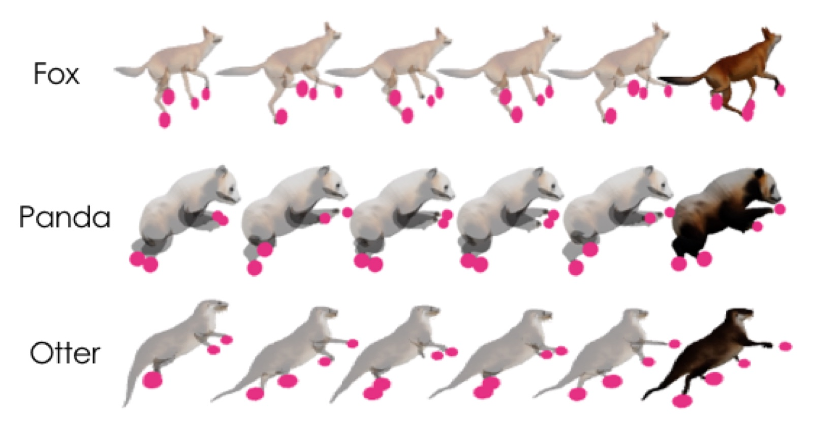
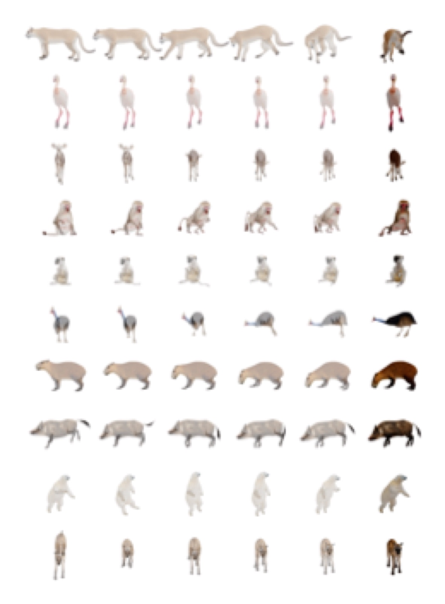

Animating any raw animal mesh from text — with no skeleton, no joint names, and no manual rigging.
1Anonymous Institution 2Anonymous Institution
TL;DR — AniMuse animates any raw animal mesh from a text prompt, with no skeleton, no joint names, and no manual rigging. It learns 120 Semantic Gaussian Bones that mean the same body part on every animal, then diffuses SE(3) trajectories over them — so you can also pin a few bones and let the model inpaint the rest.
We introduce AniMuse, a two-stage framework for text-driven animal mesh animation directly from raw meshes, without predefined skeletons, joint names, or manual rigging. At its core are Semantic Gaussian Bones (SGBs), a compact skeleton-free deformation representation decoded from a globally shared learnable query book and trained through explicit linear blend skinning with topology-aware mask-gated weights. The shared query book yields stable cross-instance bone slots, providing a mesh-native control space for text-conditioned generation and SGB-slot motion inpainting. A DiT-based diffusion model generates per-bone SE(3) trajectories from text and geometric bone latents, while allowing users to clamp selected SGB slots and inpaint the remaining full-body motion. On DeformingThings4D, our rig reduces bidirectional CD-L1 by 39% over the best neural skeleton baseline, and a forward-only variant achieves the lowest CD-L2 overall. On the out-of-domain AnimalML3D benchmark, AniMuse improves overall motion quality over skeleton-based and vertex-based baselines.
A museum specimen preserves the shape of an animal, but not the motion that made it alive. A static 3D animal mesh has the same problem: it captures limbs, proportions and species identity, but contains no recipe for how that body should move.
For humans this is a solved bridge — SMPL and a standard skeleton connect how to deform with what motion to generate. Animals have no such template. Skeletal topology, limb count, body proportions and articulation patterns all vary across species. A universal animal animation system has to be morphologically flexible, computationally compact, and usable without per-species rigging annotation.
| Skeleton-based | Vertex-based | |
|---|---|---|
| Examples | AniMo, AnyTop, Dragon, OmniMotionGPT | AnimateAnyMesh, ActionMesh |
| Control space | a joint hierarchy | all V vertices |
| Cost | needs predefined joints, names, or per-species rigs | scales as O(V · F) |
| Breaks when | the mesh doesn't match the template | the mesh is dense or the clip is long |
AniMuse takes a third space: compact like a skeleton, but learned directly from raw meshes and not tied to any fixed joint topology.

A Semantic Gaussian Bone is a soft, oriented deformation handle — a 3D anisotropic Gaussian that replaces a skeletal bone in classical linear blend skinning:
𝓑 = ( c, s, q, h ) centre c ∈ ℝ³ · per-axis scale s ∈ ℝ³₊ · orientation quaternion q ∈ S³ · per-bone geometric latent h ∈ ℝᴰ
The Gaussian-bone parameters (c, s, q) follow RigMo. What makes an SGB semantic is where it comes from: every bone is decoded from one slot of a globally shared learnable query book. Because slot k decodes bone k on every input mesh, each slot settles into a stable cross-instance role — slot 37 is the same body part on a fox and on a warthog. That is what turns the SGB index into a control interface, and what makes h a meaningful conditioning token for Stage 2 rather than an instance-specific feature.
K = 120 ≪ V. The per-frame motion state is orders of magnitude smaller than a per-vertex trajectory, so long high-resolution sequences don't blow up the generator.
SGBs are learned, not designed per species. One model handles every topology — no joint hierarchy, no joint names, no rig.
Each bone ships with a geometric context vector h at no extra cost, giving Stage 2 per-bone structural grounding for free.
Drag the divider to move the split. Drag anywhere else to orbit — both halves share one camera, so they can never fall out of step.
AniMuse Generation never touches the mesh. It produces a temporal sequence of SGB poses, and linear blend skinning is applied per frame at decoding time:
vi¹ = Σk wik ( Rkrel (vi⁰ − ck⁰) + ck¹ ), Rkrel = R(qk¹) R(qk⁰)⊤
Because every bone comes out of the same query slot, the SGB index is stable across meshes, not just within one. In the viewer below, bone colour is a ramp over the slot index — and it is the identical ramp on every animal. Hover any bone to see its counterpart on the other species.
Hover any bone — its counterpart lights up on every species.
Rigging weights from a plain Gaussian softmax over K bones are topology-unaware: a quadruped's front and back legs are spatially close but topologically distant, so they attract weight from the same bones and leak deformation into each other.
RigMo fixes this with exact mesh-surface geodesics. We get the same effect with a K-ring topology mask computed entirely as GPU sparse matrix multiplication — a binary mask Mik that only disables bones a vertex cannot topologically reach, while the softmax still supplies continuous magnitudes.
wik = Mik exp(−½ dik⊤ Sk−2 dik) / Σj Mij exp(−½ dij⊤ Sj−2 dij) with dik = R(qk)⊤(vi − ck) and Sk = diag(sk) — a Mahalanobis exponent evaluated in each bone's own frame.
| Knob | Value | What it does |
|---|---|---|
| Physical reach ρ | 0.2 | BFS radius around each bone. With mean edge length ē it sets the hop budget khops = ⌊ρ/ē⌋, keeping the gate constant in physical units regardless of vertex count. |
| Delay scale β | 0.7 | Converts each seed's Euclidean offset from the bone centre into a delay in BFS iterations, so far seeds activate later than near ones. |
| Fallback count Knear | — | Any vertex with no reachable bone is force-attached to its Knear nearest bones, guaranteeing full coverage. |
We supervise the rig through differentiable mesh deformation — no rigging ground truth is ever used. Given two posed meshes Va, Vb from the same animation, the network independently predicts an SGB set for each, and we minimise a symmetric reconstruction loss across both deformation directions:
ℒrig = ℒa→b + ℒb→a + λs · ℒscale
The bidirectional form makes every predicted SGB set act as both source and target rig within a training step — doubling supervision per frame pair and avoiding any privileged "rest" frame. Because the whole path is differentiable, gradients flow back through the rigging weights into bone placement, scale, orientation, and the per-bone latent.
Trained on the ℓ₂ term alone, the network finds a degenerate shortcut: instead of rotating each bone to track its part, it shifts the bone centre and shrinks the anisotropic scale, so every bone collapses to an isotropic sphere and deformation is explained almost entirely by translation. Normal consistency alleviates this but doesn't kill it — the bones can still use frame-to-frame scale fluctuation to fake rotation. ℒscale ties the scales predicted from two different poses of the same mesh together, locking bone geometry across frames and forcing genuine rotation.
This experiment isolates Stage 1: extract a rig from a rest-pose mesh, use it to deform that mesh onto a posed target, and measure the residual. On the animal subset of DeformingThings4D (25 species) we sample 40 pairs per species; targets come either from the same sequence (per-motion) or a different sequence of the same species (cross-motion), the latter probing whether a rig generalises beyond the motion it was extracted from.
Ground truth, the SGBs predicted from the rest pose, and the mesh our rig deforms — same instant, same camera. Drag to orbit.
| Method | Per-Motion | Cross-Motion | ||
|---|---|---|---|---|
| CD-L1 ↓ | CD-L2 ↓ | CD-L1 ↓ | CD-L2 ↓ | |
| UniRig + Opt. | 0.0228 | 0.0076 | 0.0318 | 0.0108 |
| Puppeteer + Opt. | 0.0306 | 0.0065 | 0.0451 | 0.0122 |
| AniMuse + Opt. | 0.0138 | 0.0056 | 0.0198 | 0.0083 |
| AniMuse (network only) | 0.0283 | 0.0050 | 0.0372 | 0.0075 |
Under matched optimisation, AniMuse cuts the best skeleton baseline's CD-L1 by 39% per-motion (0.0228 → 0.0138) and 38% cross-motion (0.0318 → 0.0198). The network-only variant — no per-pair fitting at all — still takes the lowest CD-L2 in both settings: a single forward pass matches several hundred steps of test-time optimisation on top of the skeleton baselines.
Conditioned on the rest-pose SGB set from Stage 1 and a text prompt, Stage 2 generates an F-frame trajectory. The (k, f)-th token encodes bone k at frame f as a 9-D vector:
Tk,f = [ ck,f , r6Dk,f ] ∈ ℝ⁹ a bone centre plus a 6-D continuous rotation. Per-bone scale is held at its rest value — the trajectory never predicts scale.
Unlike latent-space approaches such as RigMo, our diffusion runs directly in SE(3) parameter space — there is no autoencoder wrapped around the trajectory. Standard DDPM training, cosine ᾱt schedule, x₀-prediction, and an L2 loss split by translation and rotation channels. Frame 0 is held to its clean target throughout noising and sampling, acting as a fixed identity anchor the rest of the trajectory denoises around. 50 DDIM steps at sampling.
The denoiser is a standard DiT. We flatten the K × F trajectory grid into L = K·F tokens, with bone and frame indices encoded by a 2-D rotary positional embedding on the self-attention queries and keys. Because self-attention runs over the flat sequence, it mixes spatial (cross-bone) and temporal (cross-frame) context in a single pass.
A frozen umT5-XXL encoder produces etext; every block cross-attends to it.
The Stage-1 prefix pk = [ sk ‖ hk ] is projected once and consumed by every block as cross-attention keys/values, in parallel with the text stream — so each motion token can retrieve its bone's geometric identity at every depth.
| Stage 1 | Stage 2 | |
|---|---|---|
| Backbone | 5-block PointTransformer, widths 512–2048 | 16-layer DiT, hidden 512 |
| Input | 4096-point cloud (FPS) | K × F trajectory grid |
| Bones K | 120 | 120 |
| Query book | D = 512, globally shared | — |
| Text encoder | — | frozen umT5-XXL |
| Mask params | ρ = 0.2, β = 0.7 | — |
| Objective | ℓ₂ + ℒnormal + ℒscale, bidirectional | DDPM, x₀-prediction, cosine schedule |
| Optimiser | AdamW, lr 2×10⁻⁵, no warmup | AdamW, lr 5×10⁻⁵, no warmup |
| Sampling | — | 50 DDIM steps |
We compare against the two representative paradigms: AniMo (bone-based, joint-level transforms over a learned skeleton) and AnimateAnyMesh (mesh-based, per-vertex trajectories). Training uses AniMo4D*, our reproduction of the AniMo training set — only their curation tool was open-sourced, not the dataset, so we rebuilt the corpus from scratch with their pipeline, obtaining 75,083 clips against the 78,149 reported originally. AniMuse and AniMo are both trained on AniMo4D*; AnimateAnyMesh uses its released checkpoint. All three are tested on AnimalML3D, which is fully out-of-distribution with respect to AniMo4D*.
Per-frame distance metrics don't capture whether an animation reads correctly. We use a pairwise vision–language judge: render 8 frames sampled uniformly along each generated sequence, stack two methods' renders on the same mesh and prompt into a 2×8 contact sheet, and have a strong VLM score each row independently 1–5 on six attributes. Three pairwise tracks centred on AniMuse (vs. GT, vs. AniMo, vs. AnimateAnyMesh); we report each method's mean per-attribute score.
| Method | Action Alignment | Pose Plausibility | Motion Coherence | Motion Diversity | Visual Integrity | Species Consistency | Overall ↑ |
|---|---|---|---|---|---|---|---|
| AniMuse (Ours) | 2.92 | 3.89 | 4.15 | 3.12 | 4.20 | 4.22 | 3.50 |
| AnimateAnyMesh | 2.24 | 4.04 | 4.40 | 2.12 | 4.41 | 4.24 | 3.16 |
| AniMo | 2.60 | 3.03 | 3.33 | 3.10 | 3.46 | 3.84 | 3.05 |
| GT (reference) | 4.14 | 4.60 | 4.79 | 4.42 | 4.82 | 4.63 | 4.56 |
AnimateAnyMesh wins the "looks clean" attributes for a simple reason — it barely moves.
Its Motion Diversity collapses to 1.00 on the bear9AK_Runforward sample, and a near-static
sequence is trivially coherent and visually intact. AniMuse leads on the attributes that actually
measure whether the prompt was followed: Action Alignment, Motion
Diversity, and Overall Quality.


Because SGBs share semantic indices across species, a constraint placed on bone k in one mesh applies to the same body part in any other mesh. We turn this into motion inpainting: a user pins the trajectory of a chosen subset of bones, and the model generates coherent full-body motion consistent with that specification — simultaneously across multiple meshes.
We generalise the frame-0 anchor. Each token already carries a 1-bit anchor flag, originally raised only on frame-0 tokens; we extend it to any (k, f) token whose trajectory should be held fixed, and re-clamp those tokens to their target values at every diffusion step during sampling. To make the model accept arbitrary user masks, we fine-tune with a randomised mask drawn uniformly from three patterns per step: (i) one bone fixed across all frames, (ii) all bones fixed in one frame, (iii) a sparse random subset of bones at a sparse random subset of frames. The standard frame-0 anchor is just a special case of (ii).
In the viewer below, the four grey bones are the pinned ones — the same four SGB slots on every animal. Everything else is what the model generated around them, under each species' own prompt.

The same index space gives direct manual control. Below, one slider drags the twelve SGB slots that make up the left front leg. Because those slots mean the same leg on every animal, the same slider drives all three species at once — no per-animal setup.
The highlighted bones are the leg group. Switch to Mesh to see the surface follow through linear blend skinning.
Because AniMuse trains directly on raw mesh sequences — no template, no predefined skeleton, no manual rigging annotation — the training corpus can be extended with mesh sequences from any source. We exploit this to curate WebAnimal3D, an annotation-free animal motion corpus reconstructed from publicly available web video.
The AniMuse model that produces the teaser is trained jointly on DT4D + WebAnimal3D. We release WebAnimal3D as a starting point for future research on skeleton-free animal motion at larger scale.
The three corpora are built by independent pipelines and contain no overlapping motion sequences. DT4D is the publicly released benchmark of Li et al. AniMo4D* is regenerated solely from AniMo's curation tool, whose original dataset was not released; we provide our reproduction recipe only to support apples-to-apples evaluation. WebAnimal3D contains mesh trajectories reconstructed via AniMer+ from a publicly available web video corpus — we plan to release the mesh-level motion data and captions, but not the underlying videos.
| Loss configuration | Per-Motion | Cross-Motion | ||
|---|---|---|---|---|
| CD-L1 ↓ | CD-L2 ↓ | CD-L1 ↓ | CD-L2 ↓ | |
| ℓ₂ only | 0.0139 | 4.64 | 0.0147 | 4.83 |
| ℓ₂ + ℒnormal | 0.0111 | 3.45 | 0.0110 | 2.11 |
| ℓ₂ + ℒscale | 0.0108 | 2.57 | 0.0123 | 2.88 |
| ℓ₂ + ℒnormal + ℒscale | 0.0108 | 2.50 | 0.0109 | 2.05 |
Either auxiliary loss already beats the ℓ₂-only baseline on every metric, but only the combination wins all four columns — confirming that the two terms address complementary failure modes.

@article{animuse2026,
title = {Night at the Museum: Text-Driven Motion Generation via Semantic Gaussian Bones},
author = {Anonymous},
journal = {ACM Transactions on Graphics (TOG)},
year = {2026}
}[TODO: final citation once the submission is de-anonymised]